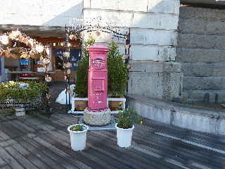
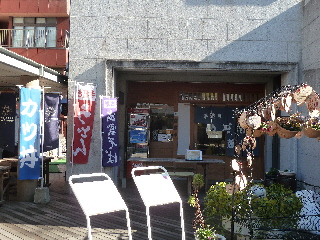

カラコロ工房でうどんを食べました。
更新日 : 2013/01/05
今はピンク色のポストと絵馬が人気あるみたいですね。

この場所で写真撮ってる人が多くいました。
幸せになれるといいですね。
私も幸運のポストの写真を撮ったので、幸せになれるといいな。

ポストの奥にあるうどん屋さんでお昼ご飯を食べました。
うどんの麺が長かったです。食べにくいですが、長生きできそうでいいですね。縁起物が多い場所なので、ヒッタリだなーって思いました。
今日はピリ辛の中華うどんを食べました。
中華あんかけうどんで、アツアツで温まりました。